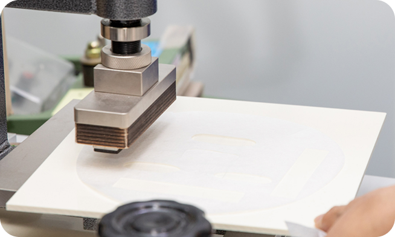

INNOVATIVE R&D LAB
연구로 시작해,
기술로 완성합니다.
이미인 R&D Lab은 마스크팩, 스킨케어, 신제형 등 각 영역에
특화된 전담 연구진으로
구성되어 있으며, 30년 경력의 기술연구원장을 중심으로 수십
명의 연구원이 매달 트렌드 분석과
중장기 과제를 수행하고 있습니다
시장 흐름을 주도하는 차별화된 제형 기술은 이미 수십 건의
특허로 검증되었으며, 고객사의 니즈에 최적화된 맞춤형 제품을
정밀하게 처방합니다.
-
깊이 있는 연구와 빠른 기술 전환,
그것이 이미인의 R&D입니다.
MANPOWER
- R&D 인력 확보
-
이미인 R&D 센터는 내부 조직 중 가장 큰 규모로 전체
인력의 약 15%를 차지하고 있습니다.
차별화 된 전문성을 갖춘 연구원을 대거 영입하여 인적 인프라를 한층 강화했습니다.
전체 인력 중 R&D 전문가 비율
- 경쟁력 있는 전문 인력
-
30년 경력의 기술연구원장을 필두로 구성된
R&D 연구진은 매월 신제품을 분석하고,
자체 과제 연구, 인벤토리 전시, 경연대회 등을 통해 연구 노하우를 축적하고 있습니다.
매월 신제품을 분석하고,
연구 노하우를 축적하고 있는
R&D 연구진
- 5개 전담팀 구성
-
R&D 센터는 스킨케어연구1팀, 스킨케어연구2팀, 마스크연구
1팀, 마스크연구 2팀, 신제형연구팀 5개의 전담팀으로
구성되어 있습니다.
각 분야별 연구원들은 고객 맞춤형 전담팀을 구성해 전문적인 서비스를 제공합니다.
스킨케어연구1팀/ 스킨케어연구2팀/
마스크연구 1팀/ 마스크연구 2팀
신제형연구팀 5개
R&D FACILITY
이미인은 각종 R&D 설비 및 물적 인프라
구축에도 적극적으로 투자합니다.
마스크 시트 연구를 위한 만능재료시험기부터 정밀한 분석이 가능한 광학 현미경, 스킨케어 개발 설비, 최근에는 의약외품 품질 분석을 위한 함량 시험기기까지 최신 장비를 활용해 보다 정밀하고 안전한 처방을 개발합니다. 또한 R&D Lab 내 샘플 생산이 가능한 설비 시스템을 구축해 완성도 높은 시제품으로 품평 테스트를 진행합니다.
-
-
MF 설비
HSHP(High Shear High Pressure)원리를 이용해 에멀전 입자를
나노 크기 형태로 만들 수 있는 기계 -
크림 동시 충전기
최대 2개까지의 내용물을 동시 충전해 시각적으로 차별화된 제형 개발 가능
-
MF 설비
- 
-
-
마스크 디자인 설계용 레이저 커팅 시스템(Laser
Cutting System)
HSHP(High Shear High Pressure)원리를 이용해 에멀전 입자를
나노 크기 형태로 만들 수 있는 기계 -
만능재료시험기(Universal Test Machine)
인장, 압축, 박리, 마찰계수 등 대료를 시험 평가하는 장치로, 시트의 늘어짐, 부착력, 밀착력 뿐 아니라 하이드로겔의 강도와 용기에 대한 압축 평가 가능
-
마스크 디자인 설계용 레이저 커팅 시스템(Laser
Cutting System)
-
-
하이드로겔 코팅 테스트기(Hydrogel Coating
Tester)
실험실에서 간단하기 하이드로겔 코팅을 테스트하고 샘플을
확보할 수 있는 시험설비 구축
-
하이드로겔 코팅 테스트기(Hydrogel Coating
Tester)
-
-
편광현미경 시스템(Leica DM2500)
분산된 입자 크기를 측정해 정밀한 제형을 개발하고 시트의 섬유 소재를
즉각 확인할 수 있는 기기 보유
-
편광현미경 시스템(Leica DM2500)
연구개발 및 성과
이미인은 독자적인 처방을
개발하기 위해 끊임없이 연구합니다.
마스크 시트 연구를 위한 만능재료시험기부터 정밀한 분석이 가능한 광학 현미경, 스킨케어 개발 설비, 최근에는 의약외품 품질 분석을 위한 함량 시험기기까지 최신 장비를 활용해 보다 정밀하고 안전한 처방을 개발합니다. 또한 R&D Lab 내 샘플 생산이 가능한 설비 시스템을 구축해 완성도 높은 시제품으로 품평 테스트를 진행합니다.
-
시트마스크
다층 셀룰로오스 구조를 이용한 부직포 개발
-
다층의 셀룰로오스 구조를 이용함으로써 높은 흡수력과
보습력을 가지고
뛰어난 유연성 으로 피부와의 밀착감이 우수한 부직포 개발
다층 셀룰로오스 구조를 이용한 부직포 및 이를 이용한 부직포 마스크
등록번호 10-0820073
연구기간 2006.11~2008.04
-
시트마스크
고점도 젤리 제형의 마스크팩 개발
-
흘러내림이 없는 고농축 워터 젤리 제형으로
수분감이 우수한 마스크팩 개발
MMP(Moisture matrix technology using polymer gelation) :
폴리머의 젤화로 수분 매트릭스를 형성하여 수분을 포집하는 기술 적용
연구기간 2017.03~2018.03
-
시트마스크
시트 침적형 머드 마스크팩 개발
-
저점도를 가져 안정적으로 시트 형의 머드 팩을
제공할 수 있는 조성물과 이를 포함하는 머드 팩
출원번호 10-2016-0015302
연구기간 2016.08~2019.08
-
시트마스크
오일 세럼 제형 마스크팩 개발
-
끈적임 없이 촉촉한 사용감의 오일세럼 마스크 개발
오일 입자를 미세하게 분산시켜 놓은 제형
: Oil Dispersion Control Without Emulsifier
제형화 기술 적용
연구기간 2018.05~2019.05
-
시트마스크
이미인 독자원료 SebumDrop 개발
-
원료사와 공동개발을 통한 이미인 독자원료 개발 · 특허
출원 완료
레몬, 티트리, 녹차, 백차, 우롱차, 홍차, 황차 및 보이차 추출물을
함유하는 블랙헤드 및 화이트헤드 제거용 화장료 조성물
출원번호 10-2023-0155998
연구기간 2023.01~2024.06
-
스킨케어
왁스재결정을 통한 제형 내 캡슐형성 기술연구
-
1.피그먼트를 함유한 캡슐이 제형내에서 보이는
외관차별화
2.소량의 피그먼트를 수상에 분산하여 촉촉하고 가벼운 프라이어 사용감 구현
3.피그먼트-왁스 분산&재결정 기술확립으로 다양한 색상 구현
연구기간 2021.01~2022.10
-
스킨케어
왁스재결정을 통한 제형 내 캡슐형성 기술연구
-
1. 비정형적인 캡슐이 제형(크림상)내에서 보이는
외관차별화 크림개발
2. 유화제를 사용하지 않아 산뜻하고 촉촉한 사용감 구현
3. 유성 액티브 성분을 캡슐화하여 안정하게 포집
연구기간 2021.01~2022.10
-
스킨케어
가용화젤 상 내 오일분산 기술연구
-
1.고분자 네트워크상에 오일입자를 안정적으로 분산하여
외관차별화
2.계면활성제를 사용하지 않아 오일드롭이 피부에 도포되면서 보습유지
3.최소한의 원료로 저자극의 보습에센스 구현 가능
연구기간 2022.02~2023.02
-
스킨케어
반 유화기술(크리밍기법)을 이용한 층분리 기술
-
1.상층부가 유백상의 에멀젼상인 이층상 제형으로
외관차별화
2.오일함량에 따라 다양한 사용감구현으로 크림~앰플 소구 가능
3.한번에 충진하는 타입으로 충진공정이 간단함
연구기간 2022.04~2023.08
-
스킨케어
두 가지 제형이 트랜스폼 되는 제형기술
-
두 가지 제형이 혼합과 동시에 트랜스폼 되는
제형기술
1.(1제) 고점도의 크림 + (2제) 비타민파우더 = 워터리한 크림 앰플 구현
2.크림을 앰플화 하여 발림성, 흡수성 향상
연구기간 2023.05~2024.02